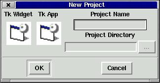
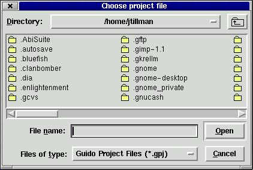

The largest manageable unit in Guido is the Project. A Project is made up of files of many sorts: source files, required files, support files, and used files. Due to Guido's extensible nature, an infinite number of other potential file types might also be managed by a Project. A Project itself can be saved, loaded, and collated into Perl code. We refer to the process of creating Perl code as "collation" to differentiate it from "compilation" which, in other languages, creates a binary executible. Note that only information about the names and locations of the files a Project manages are saved in the Project's file, not the data that is part of the files themselves.
Projects are managed by a Guido plug-in which is aptly named the "Project Manager." It appears (in the default Guido configuration) on the left-hand side of the main Guido window, and displays the list of open projects and the files they are managing. Often these file listings will have context-sensitive menus that you can bring up by right clicking on files in the listing.
To create a project in Guido, choose the File->Project->New Project menu option. At this point, you should see a dialog box like this:

New Project Dialog Box
To create your new project, simply choose the project type, give a name for your project, and indicate where Guido should create the project directory for your project. Currently project types of TkApp and TkWidget are supported. TkApp projects are intended for creating standalone Perl/Tk applications that run as perl scripts. Their target "collation" files are Perl scripts. TkWidgets, on the other hand, are intended to become Perl/Tk extensions suitable for uploading to CPAN. They are good for situations when you know that some of your Tk GUI could be re-used in other projects, or might be useful to other developers through CPAN.
One note about the project directory: Guido will create the directory for you. If you have a pre-created directory, it must be the same name as the project, and you should enter its parent directory in the entry box. So if you had a project named "Qwerty" and the directory already existed in the /home/me/projects/Qwerty directory, you would enter /home/me/projects in the entry box.
Once you've entered the information, click "OK" and Guido will prepare the directory for you. Most project types will create a new project file, a beginning SourceFile (a TkForm file in the case of a TkApp project), and some other supporting files, such as an events file for putting event handler code into.
At this point you're ready to start working on the Project.
If you've closed Guido and are back for another session, you'll need to know how to open a pre-existing project (unless you have Guido configured to automatically load your last project). The process is, again, quite simple. If you've recently used the project you want to open, you might check the File->Recent Files list to see if it's there. If it isn't, you can choose the File->Project->Open Project menu option, and you should be presented with the familiar "Open File" dialog box:

Open Project Dialog Box
Find the project file you wish to load (it will have a .gpj extension) and then click "OK."
The properties of a project can be viewed in the middle of the main Guido window if you click on the name of the Project in the "Project Manager." Modifying the values of the listed properties will actually change the values in the project itself. Changing a project's properties is not advised at this point in Guido's development. At some point prior to our first major release, a project will be able to adapt to changes in its properties.